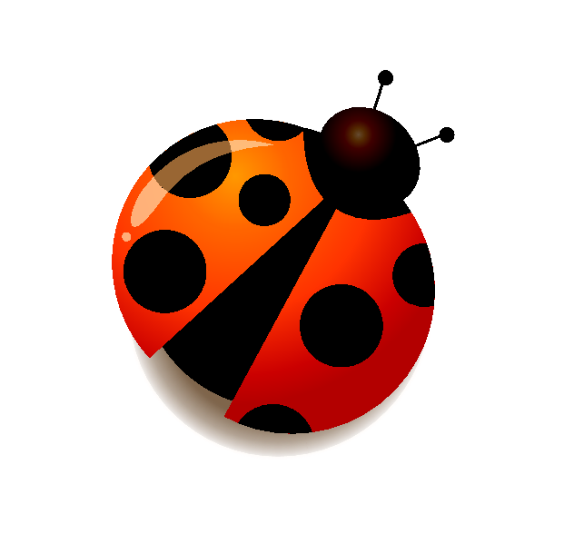
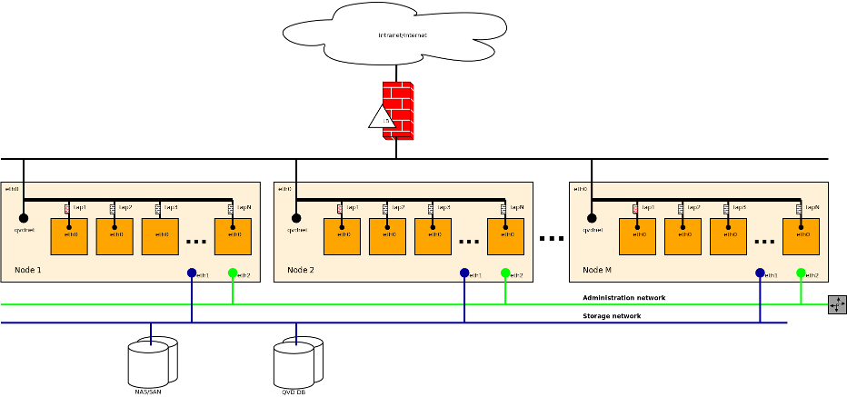

00:00:00
QVD

Salvador Fandiño (salvador@qindel.es)
QindelGroup
Notes
QVD
-
Producto de "Virtual Desktop Infrastructure" (VDI)
-
100% Open Source
-
100% Linux
Notes
Cliente
- Linux
- Windows
- OS X
- Android
- iOS (en desarrollo)
- Plugin Firefox/Chrome (en desarrollo)
Notes

Notes

Notes
Servidor/Granja
- Linux
- Ubuntu
- SuSE
- RedHat
Notes
Administración
-
Herramienta Web
-
Herramienta de linea de comandos
Notes

Notes
Destaca por...
- Eficiencia de la solución (CPU, RAM, I/O y ancho de banda).
- Escalabilidad (10.000 usuarios por granja, 400 VMs por nodo).
- Gestión de imagenes de disco inspirado en los sistemas de control de versiones.
- Integrable y adaptable (Open Source, arquitectura).
- Tambien funciona como servidor de aplicaciones.
Notes
Arquitectura

Notes
Por dentro
- Linux
- Virtualizadores KVM y LXC
- HTTP/SSL para la comunicacion cliente-servidor
- NX para compression del protocolo X11
- iptables y ebtables para confinamiento de las VMs
- PostgreSQL
- Desarrollado en Perl, C, Javascript
Notes
¿Preguntas?
Notes
Notes
Exprimiendo Linux
...o como llegar a correr 400 máquinas virtuales en un host.
Notes
Cuellos de botella
- RAM
- I/O
- CPU
- Red
- Kernel
Notes
Notes
Interdependencias
- Si aumenta el uso de memoria por los procesos → menos memoria para buffer de disco → aumenta el I/O
- Si aumenta el acceso al disco por los procesos → aumenta el uso de memoria como buffers → aumenta el uso de RAM
- Si aumenta el uso de swap → aumenta la carga de I/O
Notes
Máquinas virtuales
- KVM, Xen, VMWare, etc.
- La emulación introduce sobrecarga de CPU e I/O
- Cada máquina virtual tiene su propio kernel.
- Las VMs no colaboran sino que compiten por los recursos.
- Cada VM tiene sus buffers de I/O
- Las VMs usan el 100% de la memoria asignada.
Notes
VMs - Soporte hardware
Cada nueva generación de procesadores introduce mejoras en el soporte para virtualización: AMD-V, VT-x, AMD-Vi, VT-d, EPT, VMCS
Notes
VMs - Virtio
- Reemplaza la emulación de hardware por hiper-llamadas desde el kernel de la máquina virtual al sistema anfitrión
- Reduce el uso de CPU
- Soportado por KVM, Xen, VMware, etc.
Notes
VMs - KSM
- Consolida páginas de memoria con igual contenido.
- Funciona con KVM
- El consumo de CPU no es despreciable ‐ O(N).
- Muy efectivo con los buffers de I/O.
- No detecta páginas que no estan siendo utilizadas.
- Poco efectivo con la memoria de procesos que usan JITs, garbage-collectors o muchas estructuras dinamicas (JVM, GTK+).
Notes
VMs - Balloon driver
- Pincha un agujero en la RAM de la máquina virtual y se la devuelve al sistema anfitrión.
- Soportado en KVM, Xen, VMWare, ...
- No introduce carga de CPU.
- Se adapta a la "presión" de memoria dentro de la máquina virtual.
- Las VMs usan su swap → I/O↑ ¡peligro!
Notes

Notes
VMs - I/O
- Uso total de disco
- Número de operaciones por segundo
- x 2 → local, remoto
Sin perder de vista...
- Provisión de VMs
- VMs volatiles
Notes
VMs - Overlays, qcow2
- Sobre una unica imagen base, se crean varias imagenes derivadas.
- Es una capa adicional con coste en CPU e I/O.
- Los overlays solo almacenan las diferencias con la base.
- Podemos almacenar el overlay en local si no necesitamos persistencia.
Notes
VMs - Optimización del SO invitado
- Se puede optimizar los sistemas operativos que corren en las VMs
- Eliminar I/O innecesario (caches navegador, logs).
- Utilizar aplicaciones ligeras (IceWM).
- Separar partes persistentes (
$HOME) de partes desechables (/). - El
cron...
Notes
VMs - Conclusiones
- Mejor soporte hardware, virtio → CPU↓
- KSM → RAM↓ CPU↑
- Balloon driver → RAM↓ I/O↑
- Overlays → Uso de disco total↓↓
- Redistribuir carga de I/O entre local y remoto.
- Optimización del SO virtualizado.
¡No hay soluciones mágicas!
Notes
LXC - Linux Containers
chroot on asteroids
Notes
Linux, el kernel...
Permite particionar los recursos que gestiona:
- Procesos (
/proc) - Arbol de sistemas de ficheros
- Red (interfaces, rutas, reglas firewall, etc.)
- ...
Notes
LXC
- Crea contenedores utilizando las capacidades de particionamiento del kernel.
- Aun en desarrollo. Tiene bugs, normalmente poco criticos y oscuros.
- Similar a Solaris zones, FreeBSD jails, Linux-VServer, OpenVZ.
Notes
LXC
- Funcionalmente un contenedor es identico a una máquina virtual.
- Con la particularidad de que no ejecuta su propio kernel.
- Control de uso de CPU, RAM e I/O (cgroups).
- Puede compartir recursos con el anfitrión → ¡flexibilidad!
- Al menos tan seguro como la virtualización completa.
Notes
LXC en 20 segundos
# como root...
lxc-create -n test -t sshd
lxc-ls
mkdir /var/lib/lxc/test/rootfs/root/.ssh
cp ~salva/.ssh/id_dsa.pub /var/lib/lxc/test/rootfs/root/.ssh/authorized_keys
lxc-start -n test
# en otra terminal...
ssh 10.0.3.23 -l root
Notes
LXC - Ventajas
- No hay sobrecarga de RAM, CPU o I/O.
- Con LXC solo hay un kernel que tiene visibilidad de todo y se encarga de repartir los recursos entre los contenedores/procesos eficazmente.
- Se comparten los buffers de I/O.
- Los contenedores solo usan la memoria que necesitan.
Notes
LXC - Inconvenientes
- Se usa el kernel del sistema anfitrión.
- En teoria malo para las actualizaciones.
- En la práctica no es un problema.
- No tenemos overlays de disco.
Notes
LXC - s/overlays/?/
Notes
LXC - LVM?
- Con LVM podemos emular los overlays.
- Gestión muy complicada.
- Cada capa es vista de manera independiente por el kernel → los datos acaban duplicados en buffers de I/O.
Notes
LXC - Btrfs?
- Solo funciona en local.
- Crear nuevas máquinas es muy rápido.
- No hay datos duplicados en disco (a nivel de bloque).
- Se comparten buffers de I/O pero no
mmaps. - En desarrollo, hace falta un kernel muy reciente.
- SuSE lo soporta en producción.
Notes
LXC - mount --bind?
- Una rama del sistema de ficheros se puede "remontar" en otro lugar (enlace simbolico a lo bestia).
mount --bindrutasro(/**/{sbin,bin,lib}) +untarrutasrw(/{var,etc,...}) → imagen OS!- Se comparten buffers de I/O y
mmaps. - Requiere una imagen muy modificada.
Notes
LXC - union file systems?
- UnionFS
- UnionFsFuse
- AuFS
- Union Mounts
- OverlayFS
¡el culebrón!
Notes
Union File Systems
- Muchos casos de uso distintos.
- Compromiso entre eficiencia, funcionalidad y compatibilidad (semantica POSIX).
- Nunca se consigue contentar a todo el mundo.
- Algunos casos extremos son difíciles de abordar.
Notes
UnionFS
- Primer intento serio ‐ problemas de diseño importantes.
- Se reescribio, v2 ‐ aun con problemas.
- Lleva casi dos años sin actualizaciones.
Notes
UnionFsFuse
- Funciona con FUSE → no hay que parchear el kernel.
- Rendimiento pésimo, inviable en la práctica.
Notes
AuFS
- Fork de UnionFS, reescrito completamente en v2.
- "Feature rich".
- Han intentado integrarlo en Linux varias veces sin exito.
- Parche gigantesco del kernel. Codigo dudoso.
- Integrado en Ubuntu
Notes
Union Mounts
- Implementado sobre VFS. Estrictamente, no es un FS.
- Simplicidad pesa más que funcionalidad.
- Parecia a punto de ser integrado en 2009, pero...
Notes
OverlayFS
- Simplicidad sobre funcionalidad.
- A punto de ser integrado en 3.10... ¡Aun hay esperanzas!
- Integrado en Ubuntu
- Con LXC, se comparten buffers de I/O y
mmaps.
Notes
En resumen...
- Imagenes persistentes → OverlayFS* y AuFS en Ubuntu.
- Imagenes volatiles → Btrfs en SuSE, OverlayFS en Ubuntu.
- Para todo lo demás... no hay opciónes.
Notes
VDI en Linux - conclusiones
- LXC ofrece mejores prestaciones que KVM.
- Pero el "ecosistema" Linux/LXC aun no está maduro.
Notes
¿Preguntas?
Notes
¡Gracias!
Notes
Referencias
- Esta presentación: http://github.com/salva/s-qvd-gul-uc3m
- QVD
- Union File Systems: